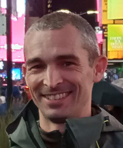
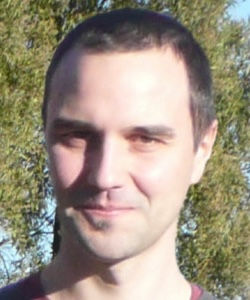
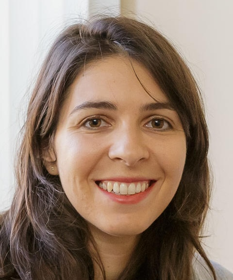
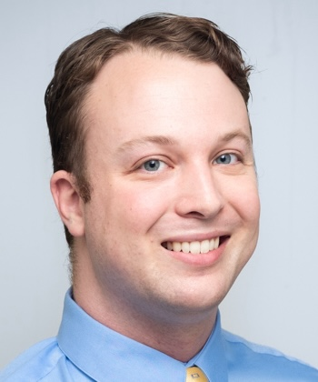

The 2025 ANITA summer school on Computational Multiphysics Hydrodynamics will take place Tuesday - Friday, 28 - 31 January 2025 at Mount Stromlo Observatory.
| Prof Daniel Price Monash University Hydrodynamics |
Prof Christoph Federrath Australian National University Magnetoydrodynamics |
Dr Lucia Armillotta Arcetri Observatory Cosmic ray MHD |
Dr Ben Wibking Michigan State University GPU acceleration |
 |  |  |  |
|---|
Preparing for the school
The school includes extensive hands-on tutorials with various codes, which we will run on OzStar at Swinburne. In order to ensure that you are able to participate fully, you must create an OzStar account linked to the school, and set up a VSCode environment on it before the start of the school.
To get set up on OzStar, please carry out the following steps:
To get VSCode set up, please carry out the following steps:
Students are also encouraged to watch Daniel Price's lectures on YouTube prior to commencement of the school, and to read through the accompany notes. These will provide some introductory material about hydrodynamics and MHD in general, whereas the lectures for the school will focus more strongly on numerics.
Getting to and from Mount Stromlo
Mount Stromlo Observatory is not accessible by public transit and is not within walking distance of the CBD. We will operate a bus service from the Novotel Canberra to Mount Stromlo Observatory and back every day of the school and workshop. Buses will depart from the Novotel bus bay every day at 9:15 am for arrival at Mount Stromlo at 9:45 am, and will depart Mount Stromlo at 5:45 pm for a return to the hotel around 6:15 pm. Parking is available for those who wish to travel in their own vehicles.
School schedule
The daily schedule for the school is as follows:
| Time / Date | Tue, 28 Jan | Wed, 29 Jan | Thu, 30 Jan | Fri, 31 Jan |
|---|---|---|---|---|
| Lecturer | Daniel Price | Christoph Federrath | Lucia Armillotta | Ben Wibking |
| Topic | Hydrodynamics / PHANTOM | MHD / FLASH | Cosmic ray MHD / Athena++ | GPU acceleration / QUOKKA |
| 9:15 | Bus pickup from the Novotel | Bus pickup from the Novotel | Bus pickup from the Novotel | Bus pickup from the Novotel |
| 9:45 | Bus arrival at Mount Stromlo | Bus arrival at Mount Stromlo | Bus arrival at Mount Stromlo | Bus arrival at Mount Stromlo |
| 9:45 - 10:00 | Welcome to Country, Paul Girrawah House | |||
| 10:00 - 10:50 | Lecture 1: Introduction to hydrodynamics | Lecture 1: From hydrodynamics to the MHD equations | Lecture 1: Introduction to cosmic ray physics | Lecture 1 |
| 10:50 - 11:20 | Morning tea | Morning tea | Morning tea | Morning tea |
| 11:20 - 12:10 | Lecture 2: A whipcrack tour of particle methods | Lecture 2: Non-ideal MHD and particle-in-cell (PIC), examples of science applications (star formation, jets/outflows, turbulent dynamos) | Lecture 2: Numerical schemes for cosmic ray transport coupled with MHD | Lecture 2 |
| 12:10 - 13:00 | Practical tutorial: setting up your programming environment, using git, intro to PHANTOM | Practical tutorial | Practical tutorial: Introduction to Athena++ and code setup | Practical tutorial |
| 13:00 - 14:00 | Lunch | Lunch | Lunch | Lunch |
| 14:00 - 15:30 | Workshop 1: writing your own SPH code | Workshop 1: setting up FLASH code, simple tests (shocktube, Kelvin-Helmholtz instability, Sedov explosion) | Workshop 1: hands-on exercises with the CR-MHD scheme in Athena++ | Workshop 1 |
| 15:30 - 16:00 | Afternoon tea | Afternoon tea | Afternoon tea | Afternoon tea |
| 16:00 - 17:30 | Workshop 2: writing your own SPH code | Workshop 2: TurbGen and running turbulent dynamo simulations, analyse and plot results using python tools | Workshop 2: hands-on exercises with the CR-MHD scheme in Athena++ | Workshop 2 |
| 17:45 | Bus departure from Mount Stromlo | Bus departure from Mount Stromlo | Bus departure from Mount Stromlo | Bus departure from Mount Stromlo |
| 18:15 | Bus arrival at the Novotel | Bus arrival at the Novotel | Bus arrival at the Novotel | Bus arrival at the Novotel |
| 19:00 | School dinner, Ethiopian on Northbourne |
| Name | Affiliation |
|---|---|
| Radhika Achikanath Chirakkara | Australian National University |
| Neelesh Amrutha | RSAA - ANU |
| Amrita Banerjee | Swinburne University of Technology |
| Luke Barnes | Western Sydney University |
| Imogen Barnsley | The University of Adelaide |
| Sabrina Berger | University of Melbourne |
| Amatul Firdausya Nur Cahyaningtyas | University of Melbourne |
| Kenny Chan | Macquarie University - Montana State University |
| Shun Cheung | Monash University |
| Hillary Davis | Sydney University |
| Wenhao (Eric) Dong | University of Melbourne |
| Smrithi Gireesh Babu | University of Sydney |
| Samuel Hansen | University of Tasmania |
| Miftahul Hilmi | The University of Melbourne |
| Fitz Hu | Monash |
| Ana Lourdes Juarez Garcia | Macquarie University |
| Kayla Martin | Macquarie University |
| Carmen Martinez Harris | Queensland University of Technology |
| Bridget Mcfarlane | Monash University |
| Edmund Mckennall | University of Adelaide |
| Melissa Mckenzie | Queensland University of Technology |
| Jordan Moncrieff | University of Western Australia |
| Ankita Mondal | Swinburne University of Technology |
| Huon Morton | Queensland University of Technology |
| Chunliang Mu | Macquarie University |
| Haritha Mullathody | The University Of Melbourne |
| Ashwathi Nair | Swinburne University of Technology |
| Jack Nibbs | Macquarie University |
| Jemma Pilossof | The University of Adelaide |
| Jason Price | ANU |
| Huimin Qu | the University of Sydney |
| Nicolas Rodriguez-Segovia | UNSW Canberra |
| Luke Rosier | University of Queensland |
| Neal Salan | Swinburne University of Technology |
| Amit Seta | Australian National University |
| Megha Sharma | Monash University |
| Janet Tang | RSAA, ANU |
| Truman Tapia | ICRAR |
| Cameron Taylor | University of Melbourne |
| Riley Thai | Monash University |
| Dylan Theron | University of Sydney |
| James Watt | Australian National University |
| Jordan Winstanley | University of Western Australia |
| Pavadol Yamsiri | The University of Sydney |
| Sophie Young | University of Tasmania |
| Justin Yu | University of Melbourne |
| Ziqi Yuan | Macquarie University |